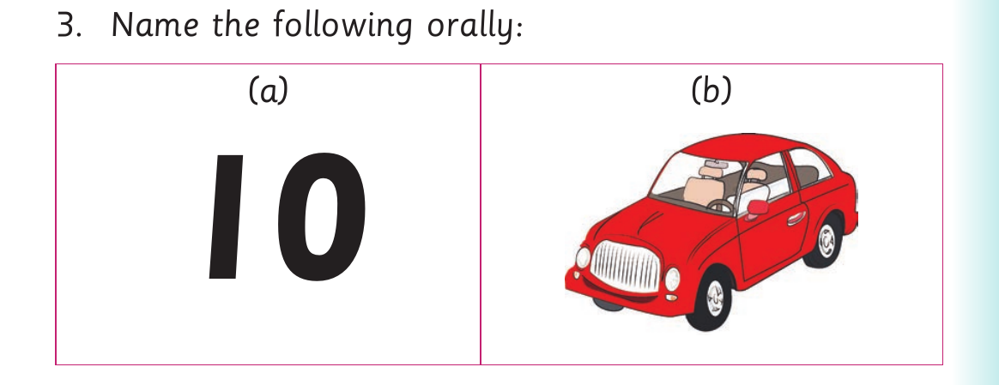

I delete sounds at the end of words or I delete letters at the end of word and sign the words
I delete sounds at the end of words or I delete letters at the end of word and sign the words.
Activity 1
1. Pronounce or sign the following words:
| card | tent | planet | team |
|---|
2. Delete the last sounds of the words in (1). Or delete the last letters and sign the words in (1).
3. Name the following orally or using sign language:

Picture table. Item A. A picture of the number ten. Item B. A picture of a red car.